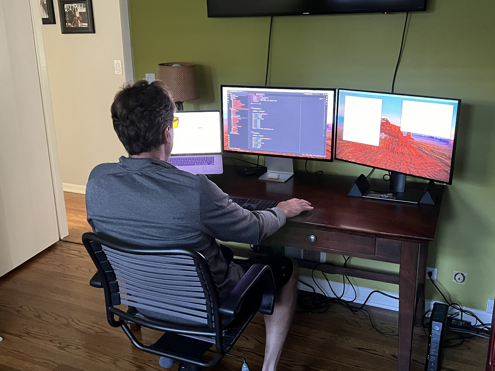

Hi, I'm Dustin Cremascoli.
And this is my Professional Website, a place to showcase my programming skills and experiences as a data and analytics engineer, by focussing on areas that are of particular interest to me including: open source technologies, data automation, the impacts weather has on your body and most importantly good food.
Click here to discover my capabilities!